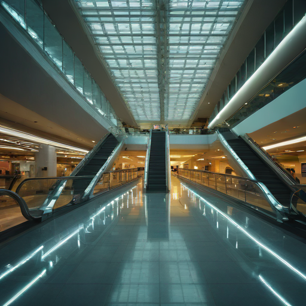
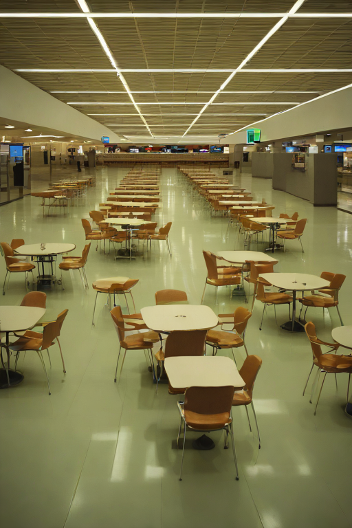
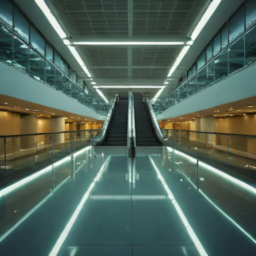
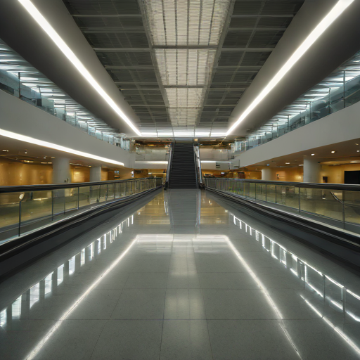
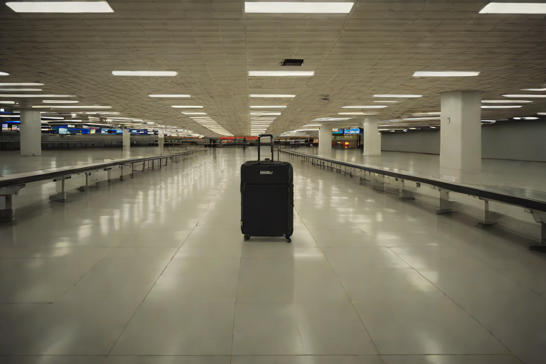
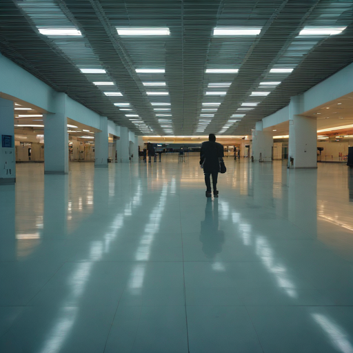
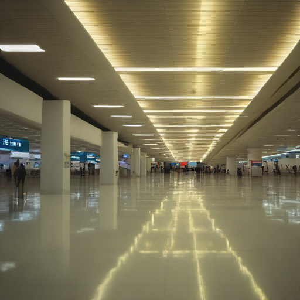
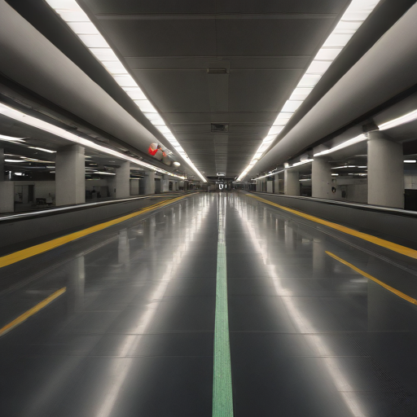
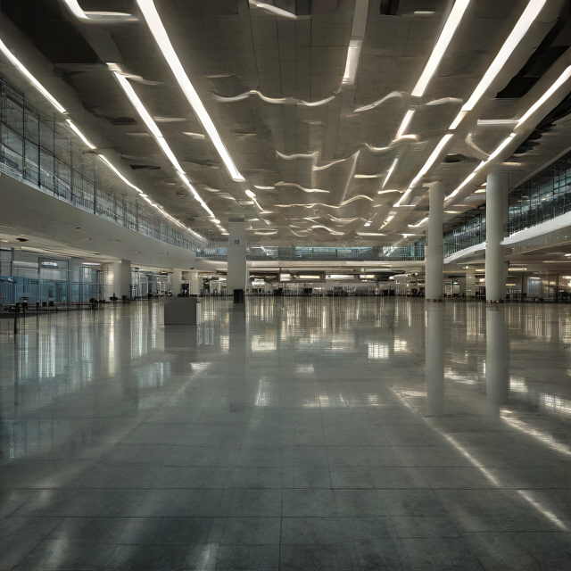
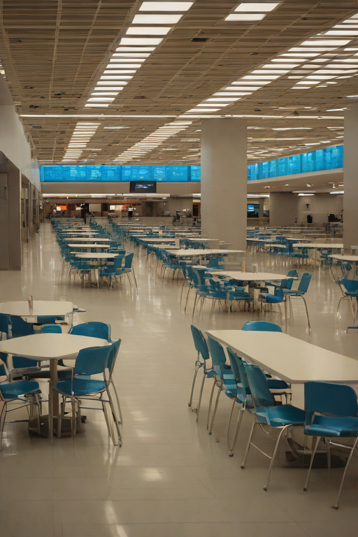

The terminal at the hour with no flights. Gates without end, escalators that only cross, a single suitcase going round. The walkway keeps moving. You are the only one it is moving.

Cat. No. IX.3.01Nothing to DeclareLatent diffusion, single pass · AI Slop, 2026

Cat. No. IX.3.02After the RushLatent diffusion, single pass · AI Slop, 2026

Cat. No. IX.3.03The Walkway MovesLatent diffusion, single pass · AI Slop, 2026

Cat. No. IX.3.04The Long Way RoundLatent diffusion, single pass · AI Slop, 2026

Cat. No. IX.3.05Under the Lights, AloneLatent diffusion, single pass · AI Slop, 2026

Cat. No. IX.3.06The Only TravellerLatent diffusion, single pass · AI Slop, 2026

Cat. No. IX.3.07Last Gate on the LeftLatent diffusion, single pass · AI Slop, 2026

Cat. No. IX.3.08Keep to the LeftLatent diffusion, single pass · AI Slop, 2026

Cat. No. IX.3.09Concourse C, EmptyLatent diffusion, single pass · AI Slop, 2026

Cat. No. IX.3.10Up, and Also UpLatent diffusion, single pass · AI Slop, 2026